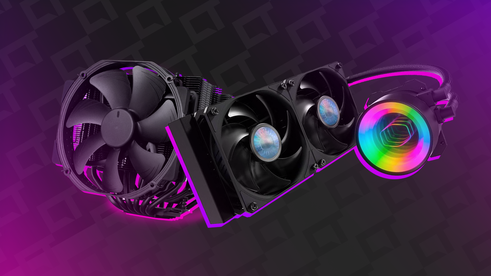

Guia para Escolha de Peças
Este guia foi elaborado para ajudar você a montar seu computador de forma segura e eficiente.
 Fazer
Login
Fazer
Login
Este guia foi elaborado para ajudar você a montar seu computador de forma segura e eficiente.
Sufixos: Indicam o nível de desempenho do processador. Os processadores Intel
incluem "i3", "i5", "i7" e
"i9". "K" indica desbloqueio para overclocking, "F" indica ausência de gráficos integrados.
Já
para os processadores AMD Ryzen, "3", "5", "7" e "9" indicam o nível de desempenho. "X" indica uma
versão mais avançada, "G" indica presença de gráficos integrados.
Gerações: Cada nova geração oferece melhorias de desempenho, eficiência energética e recursos. Exemplo: "Ryzen 5 5600X" é da série 5000 e o "Intel Core i7-11700F" é da 11ª geração.

Compatibilidade: Verifique se a placa-mãe é compatível com o seu processador. Ela também precisa ser compatível com outros componentes, como RAM e GPU.
Recursos: Considere os recursos extras que você pode precisar, como slots de expansão, portas USB, e suporte para overclocking (se necessário).

Capacidade: Escolha a quantidade de RAM com base nas suas necessidades. Para a maioria dos usuários, 8GB a 16GB é suficiente, mas se você planeja fazer edição de vídeo ou jogar jogos exigentes, pode precisar de mais.
Velocidade: Quanto mais alta a velocidade, melhor o desempenho geral do sistema, mas a diferença pode não ser muito perceptível em usos cotidianos.

Uso: Se você estiver jogando jogos ou fazendo edição de vídeo, uma GPU dedicada é essencial. Para uso geral, a GPU integrada no processador pode ser suficiente.
Memória VRAM: Mais VRAM permite que a GPU processe gráficos mais complexos. Para jogos modernos, 4GB a 8GB de VRAM é recomendado.

SSD vs. HDD: SSDs são mais rápidos e mais caros por GB, enquanto os HDDs são mais lentos, mas oferecem mais armazenamento por um preço menor. Recomenda-se um SSD para o sistema operacional e aplicativos, e um HDD para armazenamento de dados.
Capacidade: Um SSD de 250GB a 500GB para o sistema operacional e alguns aplicativos, e um HDD de 1TB a 2TB para armazenamento de dados são opções comuns.
Potência: Escolha uma fonte de alimentação com potência suficiente para suportar todos os componentes do seu sistema. Use uma calculadora de PSU online para determinar a potência necessária com base nos componentes que você escolheu.
Eficiência e Certificação: Procure por uma fonte de alimentação com uma classificação de eficiência alta (80 PLUS Bronze, Silver, Gold, ou Platinum) para economizar energia.

Tamanho: Certifique-se de escolher um gabinete que seja grande o suficiente para acomodar todos os seus componentes, especialmente a placa-mãe e a placa de vídeo.
Ventilação: Procure por um gabinete com boa ventilação para manter seus componentes resfriados e evitar o superaquecimento.
Refrigeração a Ar vs. Líquida: Os coolers a ar são mais baratos e geralmente suficientes para resfriar a maioria dos sistemas. Os coolers líquidos são mais eficientes em dissipar o calor, mas são mais caros e podem exigir manutenção.
Compatibilidade: Verifique se o cooler é compatível com o seu gabinete e placa-mãe. Marcas de Confiança: Noctua, Cooler Master, Corsair e NZXT são marcas conhecidas por seus sistemas de refrigeração.
Certifique-se de ter todos os componentes necessários para montar seu PC. Estes incluem:
Escolha uma área limpa e espaçosa para trabalhar. Certifique-se de ter espaço suficiente para organizar os componentes e seguir os próximos passos.
Antes de começar, é essencial ler os manuais de todos os componentes. Eles fornecerão instruções específicas para a instalação correta de cada peça.
Assistir a vídeos de montagem de PC no YouTube pode ser extremamente útil, especialmente para iniciantes. Canais como Linus Tech Tips e Paul's Hardware oferecem guias detalhados que complementam este guia
Insira o disco de instalação do sistema operacional (como o Windows) na unidade óptica ou crie um dispositivo de instalação USB. Siga as instruções na tela para instalar o sistema operacional no seu novo PC.
Ligue o computador e verifique se ele inicializa corretamente. Se houver algum problema, consulte os manuais e tutoriais para identificar e resolver possíveis problemas.
Parabéns, você montou seu próprio PC! Agora é hora de desfrutar do seu novo sistema e explorar suas capacidades.
Se você é novo na montagem de computadores ou simplesmente quer uma orientação visual mais detalhada, recomendamos assistir a um vídeo de montagem de PC. Lembre-se de que é importante seguir as instruções dos manuais dos componentes e usar o vídeo como um guia complementar. Não deixe de conferir nossas recomendações e aproveite ao máximo sua experiência de montagem de PC!